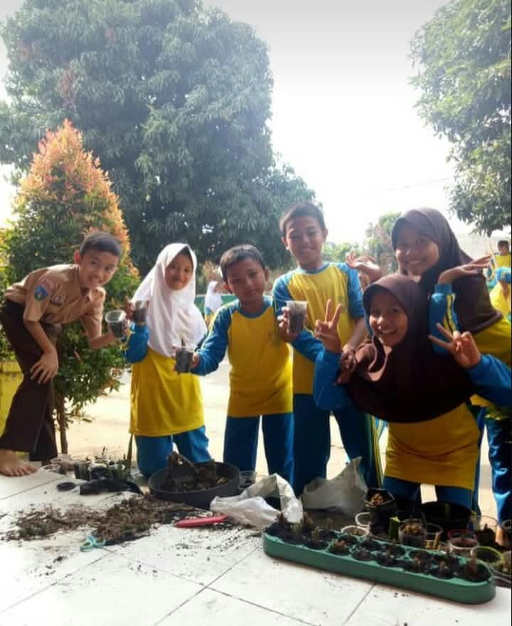
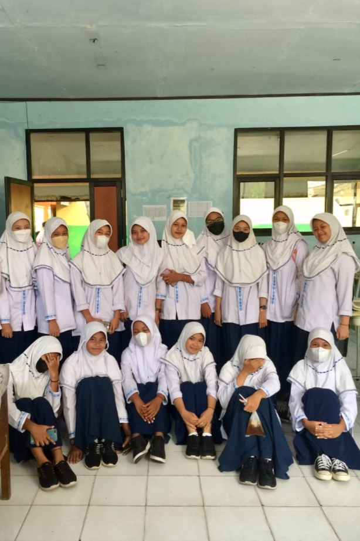
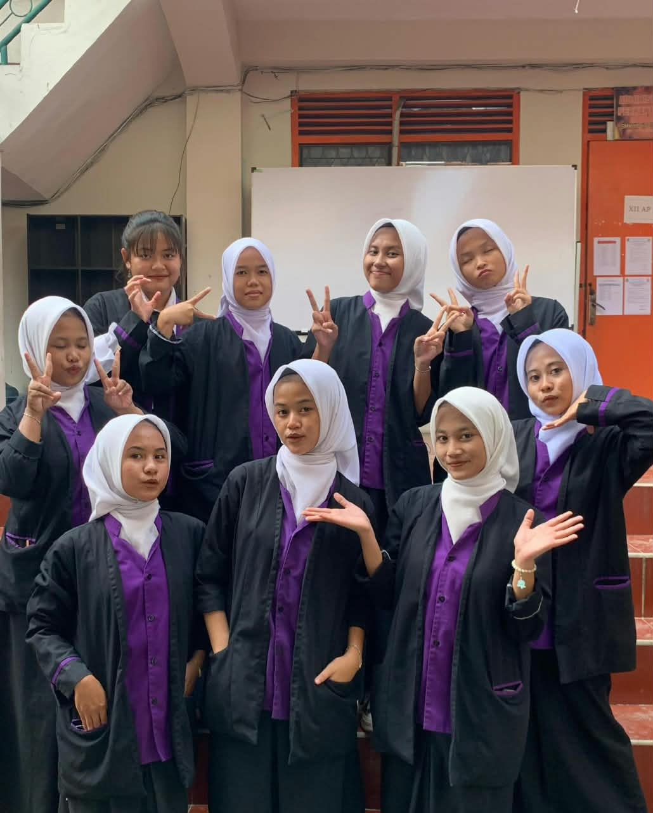
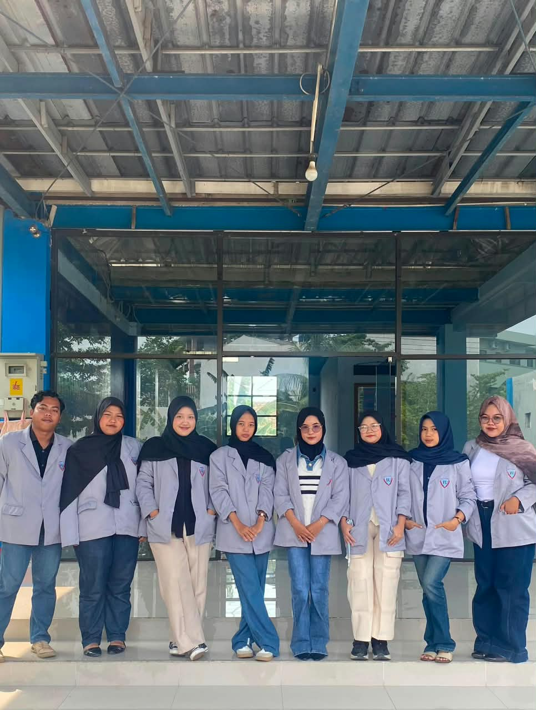

PERJALANAN AKADEMIK SAYA
My Education.
Pendidikan merupakan bagian penting dalam perjalanan hidup saya. Melalui setiap jenjang pendidikan, saya memperoleh pengetahuan, pengalaman, serta kemampuan baru yang membantu saya untuk terus berkembang.

2017-2020
Sekolah Dasar
Saya memulai perjalanan pendidikan di Sekolah Dasar. Pada masa ini, saya mempelajari berbagai pengetahuan dasar, seperti membaca, menulis, berhitung, serta belajar mengenai kedisiplinan dan tanggung jawab.

2020-2022
Sekolah Menengah Pertama
Pada jenjang SMP, saya mendapatkan pengetahuan yang lebih luas. Saya juga belajar meningkatkan rasa percaya diri, bekerja sama, dan mengembangkan kemampuan dalam kegiatan belajar.

2022-2025
Sekolah Menengah Kejuruan
Selama menempuh pendidikan di SMK, saya mempelajari pengetahuan dan keterampilan sesuai jurusan yang saya pilih. Saya juga mendapatkan pengalaman praktik kerja lapangan sebagai bekal untuk mengenal dunia kerja.

2025-2029
Perguruan Tinggi
Saat ini saya melanjutkan pendidikan ke perguruan tinggi. Saya ingin memperdalam pengetahuan, meningkatkan keterampilan, serta mengembangkan kemampuan untuk mempersiapkan masa depan.